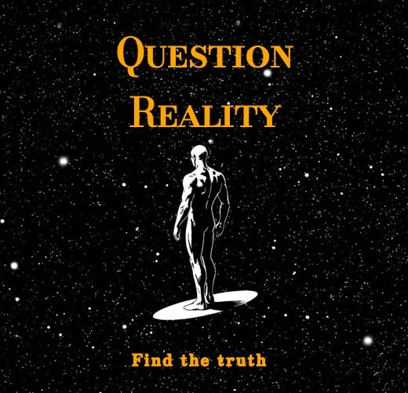

Who Was Jiddu Krishnamurti?
Jiddu Krishnamurti was an Indian philosopher, speaker, and writer whose work focused on fundamental questions concerning human consciousness, psychological freedom, thought, fear, conditioning, relationship, and self-understanding. Born in 1895 in Madanapalle, in present-day Andhra Pradesh, India, he became one of the most internationally recognized Indian thinkers of the twentieth century. He died in 1986 after decades of public speaking and dialogue.
Krishnamurti became internationally known through public talks, discussions, dialogues, and writings in which he encouraged individuals to examine their own minds rather than accept beliefs or authorities simply because they were presented as spiritual, philosophical, or traditional truths. He repeatedly questioned psychological dependence on teachers, organized belief systems, ideologies, and established patterns of thought.
A central theme of Krishnamurti's thought is that human beings are deeply conditioned by culture, education, religion, language, memory, personal experience, and social expectations. These influences can shape how individuals perceive themselves and the world, often operating without full awareness. Krishnamurti encouraged careful observation of one's own thoughts, emotions, reactions, and habitual patterns as a way of understanding how the mind functions.
Unlike many traditional philosophers, Krishnamurti did not attempt to build a formal philosophical system based on a fixed set of doctrines. His work developed primarily through direct inquiry into questions such as Why do human beings experience fear? Can the mind be free from psychological conditioning? What is the relationship between thought and conflict? His continuing influence lies in his sustained attempt to investigate these questions without asking the listener to adopt a particular ideology or belief.
Krishnamurti's ideas also extend beyond individual psychology into broader questions about society and human relationships. He argued that conflict, division, and violence cannot always be understood separately from the psychological patterns of individuals who create and sustain social institutions. For this reason, his discussions often move between the individual mind and the wider human condition, treating self-understanding as closely connected with the possibility of fundamental change.
Jiddu Krishnamurti: Quick Facts
- Name — Jiddu Krishnamurti
- Born — 1895, Madanapalle, India
- Died — 1986, Ojai, California, United States
- Known for — Philosophy, public talks, writings, and inquiry into human consciousness
- Main concerns — Truth, freedom, thought, fear, conditioning, meditation, relationship, and self-knowledge
- Religious authority — Rejected the idea that spiritual truth should depend upon a teacher or organized authority
- Major themes — Observation, psychological freedom, awareness, consciousness, and transformation
- Notable works — The First and Last Freedom, Freedom from the Known, and Think on These Things
- Important distinction — Krishnamurti's teachings are difficult to classify within a conventional philosophical school or religious tradition
Jiddu Krishnamurti and Modern Indian Philosophy

Krishnamurti's intellectual life developed during a period in which Indian philosophical and spiritual traditions were receiving increasing international attention. The late nineteenth and early twentieth centuries saw new forms of cultural exchange between India, Europe, and North America, while questions concerning religion, spirituality, science, nationalism, education, and modernity became important subjects of intellectual debate.
During his youth, Krishnamurti became closely connected with Theosophical circles. The Theosophical Society had a major international interest in comparative religion, ancient wisdom traditions, and the possibility of spiritual development. Some prominent Theosophists came to believe that Krishnamurti might become an important spiritual teacher and played a major role in shaping the circumstances of his early public life.
An organization known as the Order of the Star was created around the expectation that Krishnamurti would eventually assume a special spiritual role. This placed him at the center of an international movement and brought him into contact with audiences in several countries. His early association with the Theosophical movement is therefore essential for understanding the dramatic direction that his later intellectual life took.
Krishnamurti eventually rejected the role that others had prepared for him. In 1929, he dissolved the Order of the Star and publicly rejected the idea that truth could be organized into a fixed institution or approached through psychological dependence upon a spiritual authority. This event became one of the most important turning points in his public life and in the development of his later thought.
His rejection of organized spiritual authority did not mean that he stopped discussing profound religious or philosophical questions. Instead, Krishnamurti increasingly emphasized the importance of direct inquiry. He questioned whether another person, institution, ideology, or belief system could provide a ready-made path to psychological freedom, arguing that each individual must examine the operation of his or her own mind.
From that point onward, Krishnamurti developed an independent body of public talks, dialogues, interviews, and writings centered on the direct investigation of consciousness and human experience. He spoke extensively about thought, fear, desire, memory, conditioning, relationship, conflict, suffering, and the possibility of fundamental psychological change.
Krishnamurti's work occupies an unusual position within modern Indian philosophy. Although he was born in India and engaged with questions that overlap with Indian spiritual traditions, he repeatedly resisted being confined within a particular religious school or philosophical identity. His public work was addressed to an international audience and attempted to examine human problems without making acceptance of a specific cultural or religious tradition a prerequisite for inquiry.
His importance in modern thought also reflects the way he brought philosophical questions into direct conversation with psychology and everyday life. Rather than treating freedom as only a political or metaphysical concept, Krishnamurti asked whether the human mind could become free from fear, habitual patterns, psychological dependence, and forms of conditioning that continually reproduce conflict.
Krishnamurti therefore represents a distinctive voice in twentieth-century thought. His intellectual development moved from a highly organized spiritual movement toward an independent and often radical critique of authority, belief, and psychological dependence. This historical journey provides essential context for understanding why freedom and direct observation became such central themes throughout his later work.
What Is Jiddu Krishnamurti's Philosophy?
Krishnamurti's philosophy is difficult to place within a traditional philosophical school. He did not present a formal system consisting of fixed doctrines, technical principles, or conclusions that followers were expected to accept. In fact, one of the most consistent features of his work is his warning against turning philosophical or spiritual ideas into another form of psychological dependence.
Instead, Krishnamurti's approach emphasized direct inquiry. He repeatedly encouraged people to examine their own thoughts, fears, desires, beliefs, relationships, and assumptions rather than accepting conclusions simply because they were presented by a philosopher, religious teacher, tradition, or institution. The question was not merely what to believe, but whether the mind could observe itself without immediately escaping into explanation or authority.
A central concern of his work is the problem of psychological conditioning. Human beings are shaped by family, culture, education, religion, language, memory, personal experience, and social expectations. Krishnamurti investigated whether these influences operate automatically within consciousness and whether it is possible to become aware of them without simply replacing one conditioned belief with another.
His philosophy also gives unusual importance to the nature of thought. Thought is necessary for many practical aspects of human life, including communication, memory, technology, and everyday activity. However, Krishnamurti questioned whether thought can create psychological problems when it becomes trapped in repetitive patterns of fear, comparison, conflict, memory, and the construction of a fixed image of oneself and others.
This leads to his central concern with psychological freedom. Krishnamurti asked whether freedom means simply choosing between different available options or whether there could be a more fundamental freedom from fear, illusion, dependence, and habitual patterns of consciousness. His inquiry therefore treats freedom as an immediate question about the structure and operation of the human mind.
Self-understanding is essential to this inquiry. Rather than offering a fixed technique that guarantees enlightenment or freedom, Krishnamurti encouraged attentive observation of one's own reactions as they occur. Anger, fear, jealousy, desire, pleasure, loneliness, and attachment become subjects for direct observation rather than merely problems to be suppressed or explained away.
Krishnamurti also placed great importance on relationship. He argued that individuals often relate to one another through psychological images created by memory, expectation, hurt, desire, and fear. Understanding relationship therefore requires more than following moral rules; it requires examining how the mind constructs images of other people and how those images can contribute to conflict.
His central philosophical concern can therefore be described as the possibility of fundamental psychological transformation. Can a human being understand the mechanisms of thought, fear, conditioning, and self-image sufficiently to undergo a genuine change in consciousness? Krishnamurti returned to this question throughout his life without offering a conventional doctrine that could simply be memorized and followed.
In this sense, Krishnamurti's philosophy is best understood as an ongoing invitation to inquiry rather than a closed system of answers. His talks repeatedly return to fundamental human problems while challenging the listener to investigate them directly. The aim is not to become a follower of Krishnamurti, but to examine whether one's own mind can discover the nature of freedom, fear, thought, and awareness through direct observation.
What Did Krishnamurti Say About Truth?

Truth is one of the central themes of Krishnamurti's work. He argued against treating truth as something that can simply be handed down by an institution, teacher, religion, or philosophical authority. For him, dependence upon another person's conclusions could prevent an individual from directly examining the questions that truth is supposed to address.
His famous statement that "truth is a pathless land", made when he dissolved the Order of the Star in 1929, expressed his rejection of the idea that there is one organized route through which every person must approach truth. He opposed the creation of a spiritual system in which individuals become psychologically dependent upon leaders, institutions, doctrines, or prescribed methods.
For Krishnamurti, this did not mean that every opinion is equally true or that careful inquiry is unnecessary. His emphasis was instead on direct observation: examining what is actually taking place in consciousness rather than accepting an explanation merely because it comes from a respected authority. Inquiry requires attention rather than the automatic repetition of inherited conclusions.
He also questioned whether truth can be approached through psychological conformity. When a person adopts a belief primarily because it provides security, belonging, or certainty, the mind may be seeking comfort rather than investigating reality. Krishnamurti therefore connected the search for truth with the willingness to question deeply held assumptions and remain attentive to facts.
This emphasis made truth inseparable from the question of freedom. A mind dominated by fear, prejudice, imitation, or dependence may have difficulty seeing a situation clearly. Krishnamurti repeatedly asked whether direct perception becomes possible when the mind observes its own conditioning instead of automatically responding through previously established beliefs and psychological patterns.
Krishnamurti's approach to truth is therefore best understood as an invitation to continuous inquiry rather than the acceptance of a final doctrine. His concern was not to provide followers with a new belief system, but to ask whether each individual could investigate the nature of reality and consciousness without making psychological dependence on authority the foundation of that investigation.
Krishnamurti on Freedom from Psychological Conditioning
Psychological freedom is one of the most important ideas in Krishnamurti's teachings. He argued that human beings are deeply influenced by conditioning acquired through family, society, education, religion, culture, language, personal experience, and memory. Much of this conditioning operates continuously and may shape the mind without being consciously recognized.
Conditioning does not merely affect what people consciously believe. According to Krishnamurti, it can influence how individuals perceive themselves, respond to others, form relationships, experience fear, and interpret the world. National, religious, social, and personal identities can all become deeply embedded patterns through which experience is automatically understood.
Krishnamurti therefore questioned whether a person can observe conditioning without immediately defending, suppressing, condemning, or justifying it. If observation is immediately controlled by an existing belief or ideal, then the mind may simply be replacing one conditioned response with another rather than understanding the original pattern.
For him, awareness of conditioning was closely connected with the possibility of freedom. Freedom does not simply mean having a large number of choices within an existing system of thought. Krishnamurti investigated whether there could be a deeper freedom from psychological fear, attachment, prejudice, imitation, and habitual patterns that repeatedly create conflict.
This inquiry also raises a difficult question: who is the observer of conditioning? Krishnamurti often challenged the assumption that there is a completely separate and independent observer standing outside the thoughts and reactions being observed. He encouraged careful attention to the relationship between the observer and the psychological processes that the observer attempts to control or change.
Krishnamurti's idea of freedom is therefore not primarily a political or social theory, although he recognized the importance of human society and its problems. His central concern was whether a fundamental psychological transformation is possible. He repeatedly returned to the question of whether understanding the operation of the mind itself could bring about a freedom that is not dependent upon authority, ideology, or a predetermined method.
Krishnamurti's Teachings on Thought and the Mind
Krishnamurti frequently examined the relationship between thought, memory, experience, and psychological conflict. He did not regard thought as inherently harmful or unnecessary. Instead, he distinguished between thought as a practical instrument and the problems that can arise when psychological patterns of thought dominate perception and human relationships.
Thought is necessary for practical activities such as communication, planning, learning, technical work, and the use of accumulated knowledge. In these areas, memory and previous experience have obvious value. Krishnamurti's concern was with what happens when the mind attempts to approach psychological problems through the same repetitive mechanisms it uses for practical and technical problems.
He frequently connected thought with memory and the past. Thought often operates through accumulated knowledge and previous experience, meaning that the mind may interpret a present situation through old memories, conclusions, fears, and expectations. This can make it difficult to encounter another person or a new situation without the influence of previously formed psychological images.
Krishnamurti argued that such images can contribute to conflict. A person may respond not simply to another human being as they are in the present, but to memories of previous experiences, emotional injuries, expectations, and ideas about that person. Understanding the activity of thought is therefore closely connected in his work with questions about relationship, division, fear, and psychological suffering.
Rather than encouraging people to suppress thought or force the mind into silence, Krishnamurti emphasized observing thought as it occurs. A thought can be noticed without immediately identifying with it, obeying it, or attempting to escape from it. This attention to the actual movement of thought was central to his broader inquiry into consciousness and self-understanding.
His deeper question was whether thought has limits in the psychological sphere. Thought can solve many practical problems, but Krishnamurti asked whether it can end the very fear, division, and conflict that it sometimes helps create. This question became central to his investigation of the mind and to his broader concern with the possibility of fundamental psychological change.
What Did Krishnamurti Say About Fear?
Fear is another recurring subject in Krishnamurti's philosophy. He distinguished between the natural response to immediate physical danger and the psychological forms of fear associated with memory, anticipation, insecurity, loss, and imagined future events. His main philosophical inquiry focused particularly on these more complex psychological forms of fear.
Psychological fear often involves the movement of thought through time. A past experience may leave behind painful memories, while thought can project those memories into the future and imagine their repetition. Fear may therefore arise not only from what is happening in the present but from anticipation of what might happen, including failure, rejection, illness, loneliness, or loss.
Krishnamurti questioned whether people usually understand fear directly or immediately attempt to escape from it. Individuals may seek distraction, suppression, explanation, authority, or comforting beliefs in order to avoid an unpleasant psychological state. However, escaping from fear does not necessarily mean that its underlying causes have been understood.
His approach was to observe fear directly and investigate how thought, memory, comparison, and anticipation participate in the experience. Instead of beginning with a predetermined method for conquering fear, Krishnamurti encouraged careful attention to the actual movement of the mind when fear appears.
He also connected fear with the human search for psychological security. People often seek certainty in relationships, beliefs, social status, possessions, or fixed ideas about themselves and the future. When such sources of security appear threatened or uncertain, psychological fear can emerge and influence thought, behavior, and relationships.
Krishnamurti's central question was whether understanding the structure of fear might be different from merely controlling it. His inquiry asks the individual to examine fear without immediately condemning, escaping, or rationalizing it. This concern reflects his broader philosophical interest in whether direct awareness can produce a fundamental transformation in the way the human mind responds to psychological conflict.
Krishnamurti's Teachings on Meditation

Meditation was an important subject in Krishnamurti's later talks and writings. However, he was critical of treating meditation simply as a technique that could guarantee a particular psychological or spiritual result. He questioned whether following a method mechanically could itself become another form of conditioning and dependence.
Krishnamurti emphasized attention and observation of what is actually happening in the mind. Rather than beginning with an ideal state that the individual must achieve, he encouraged awareness of thoughts, emotions, reactions, distractions, and psychological patterns as they arise in ordinary experience.
This approach was closely connected with his criticism of spiritual authority. If meditation becomes the mechanical repetition of a technique simply because a teacher or tradition recommends it, Krishnamurti questioned whether the individual is genuinely investigating the mind. For him, psychological dependence upon a prescribed path could become an obstacle to independent inquiry.
Krishnamurti also distinguished attention from concentration in his discussions of the mind. Concentration can involve narrowing attention upon a particular object while excluding distractions, whereas his idea of attention was associated with an open awareness of what is taking place. This distinction became important in his attempt to examine whether the mind can observe without constant effort, conflict, or suppression.
His discussions of meditation therefore cannot easily be reduced to a single technique. Meditation, as he explored it, was connected with awareness of thought, freedom from mechanical patterns, sensitivity, silence, and careful observation. It was part of a broader inquiry into whether the mind can understand itself rather than merely discipline itself according to an external system.
In this sense, Krishnamurti's approach to meditation reflects his wider philosophy of self-understanding and freedom. The emphasis is not primarily on accumulating spiritual experiences or reaching a predetermined goal, but on investigating consciousness directly. Meditation becomes inseparable from the larger question of how the mind observes, thinks, reacts, and relates to the world.
Krishnamurti on Self-Knowledge and Understanding Yourself
Self-knowledge is central to Krishnamurti's approach. He did not mean simply collecting biographical information, identifying one's personality traits, or developing a philosophical theory about the self. Instead, he encouraged people to observe their reactions, fears, desires, attachments, conflicts, habits, and relationships as they operate in everyday life.
Krishnamurti often suggested that the individual is revealed through relationship. The way a person responds to praise, criticism, affection, jealousy, disagreement, disappointment, or fear can reveal psychological patterns that ordinarily operate without careful examination. Relationships therefore become an important field through which the mind can observe itself in action.
This form of self-understanding requires attention to what is actually happening rather than comparing oneself constantly with an ideal image. Krishnamurti questioned whether the attempt to become psychologically different according to a predetermined ideal can create further conflict between what a person actually is and what that person believes he or she should become.
He also connected self-knowledge with an understanding of conditioning. Personal identity is influenced by memory, culture, education, family, language, religious beliefs, and accumulated experience. Observing oneself can therefore reveal not only individual habits but also the broader social and psychological influences that shape the way a person thinks and responds.
For Krishnamurti, self-understanding was an active and continuing process of observation rather than a fixed body of information about the self. The mind changes from moment to moment, and psychological patterns become visible through actual experience. This is why he repeatedly emphasized observing oneself in daily life rather than relying entirely upon abstract theories about human nature.
Self-knowledge is therefore closely connected with Krishnamurti's broader concerns about freedom and psychological transformation. Without understanding how fear, desire, memory, thought, and conditioning operate, attempts to change the mind may simply repeat existing patterns in a new form. His central question was whether careful observation can bring a deeper understanding of these processes and open the possibility of living with greater awareness and freedom.
Krishnamurti on Relationships and Human Conflict
Krishnamurti regarded relationships as one of the most important areas in which human conditioning becomes visible. He examined attachment, dependence, jealousy, comparison, expectation, fear, and the desire to possess or control another person. For him, understanding relationships was inseparable from understanding the psychological processes that shape everyday human behavior.
He questioned whether people actually encounter one another directly or primarily relate through psychological images created by memory and past experience. A person may carry memories of previous hurt, affection, disappointment, or conflict and allow these memories to shape every new encounter. The relationship can then become influenced by images of who another person is rather than careful attention to what is actually taking place.
Krishnamurti also examined the relationship between attachment and fear. Emotional dependence may create a sense of security, but it can also produce fear of loss, rejection, or abandonment. When another person becomes psychologically necessary to one's sense of identity or security, relationships can become affected by possessiveness, anxiety, and attempts to control.
Comparison was another important source of conflict in his discussions. People may compare themselves with others in terms of success, intelligence, beauty, status, or affection and experience jealousy or dissatisfaction as a result. Krishnamurti questioned whether this constant psychological comparison strengthens division and prevents a clearer understanding of oneself and others.
His approach did not primarily consist of providing a fixed set of rules for successful relationships. Instead, he encouraged direct observation of how thought, memory, expectation, and fear operate within human interaction. Conflict becomes something to investigate rather than merely suppress through conformity or temporary compromise.
Krishnamurti's analysis of relationships was therefore connected with his wider investigation of freedom and psychological transformation. If individuals can understand the images and conditioned reactions that they bring into relationships, he asked whether a different quality of relationship might become possible. This question links his reflections on human intimacy directly with his broader concerns about thought, consciousness, attachment, and conflict.
Krishnamurti on Consciousness and Human Thought
Krishnamurti devoted considerable attention to consciousness and to the ways human experience is shaped by accumulated memory and psychological conditioning. He questioned whether consciousness, as it is ordinarily experienced, consists largely of memories, beliefs, fears, desires, knowledge, images, experiences, and patterns inherited from both personal and social life.
For Krishnamurti, consciousness was not simply an abstract philosophical subject. Its contents become visible in everyday reactions, including fear, pleasure, anger, ambition, attachment, loneliness, and conflict. This made the investigation of consciousness a practical question as well as a philosophical one: understanding consciousness meant examining the actual movement of one's own mind.
He was particularly interested in the relationship between consciousness and thought. Thought depends upon memory and accumulated experience, and it continually interprets new situations through previously established knowledge and psychological patterns. Krishnamurti therefore questioned whether consciousness can be understood clearly when the observer is itself part of the same movement being observed.
His discussions also raised the question of whether human consciousness is entirely individual in nature. Krishnamurti sometimes emphasized that human beings share many fundamental psychological problems, including fear, suffering, pleasure, loneliness, and conflict. He therefore questioned the extent to which the contents of consciousness are shaped by broader patterns of human experience rather than belonging exclusively to a completely separate individual self.
Rather than offering a technical scientific theory of consciousness, Krishnamurti emphasized direct observation. He encouraged individuals to watch how thought, memory, emotion, and reaction actually arise. His concern was whether observation could reveal the structure of consciousness without immediately forcing experience into a predetermined philosophical or religious explanation.
Krishnamurti's discussions of consciousness therefore overlap closely with his investigations of thought, memory, time, identity, fear, and psychological conflict. His broader question was whether understanding these interconnected processes could make fundamental psychological transformation possible. Consciousness, for him, was not only something to define theoretically but something to investigate directly within the movement of everyday life.
Krishnamurti on Psychological Time
Krishnamurti distinguished between chronological time and what he described as psychological time. Chronological time is necessary for practical activities such as arranging appointments, travelling, learning skills, planning work, and understanding physical processes. His criticism was not directed against the ordinary practical use of time.
Psychological time refers to the movement of thought from what has happened toward what might happen, particularly in relation to fear, hope, memory, desire, and the idea of becoming. The mind remembers a psychological experience from the past, interprets the present through that memory, and projects expectations or fears into an imagined future.
Krishnamurti questioned whether the psychological self often lives through this movement of past and future rather than through direct attention to the present. A person may carry old injuries, regrets, ambitions, or fears while continually imagining a future condition in which these problems will finally disappear. This movement can become a central feature of psychological conflict.
The idea of gradual psychological becoming was particularly important to his inquiry. People often think, "I am this now, but I will eventually become something different." Krishnamurti questioned whether this division between what one is and what one hopes to become can itself create conflict, comparison, effort, and dissatisfaction.
His interest in psychological time was also closely connected with fear. Fear frequently involves anticipation: the mind remembers pain or imagines a future loss and then reacts to that imagined possibility as a source of psychological anxiety. Understanding fear therefore required examining the relationship between thought, memory, and the projection of the future.
Krishnamurti's inquiry into time ultimately formed part of his broader question about psychological transformation. If the mind constantly postpones change into the future, can genuine understanding occur now? He repeatedly questioned whether freedom from a psychological pattern must always be gradual or whether direct perception of the pattern can produce a more immediate and fundamental change.
Why Did Krishnamurti Reject Spiritual Authority?
Krishnamurti's rejection of spiritual authority became one of the defining features of his later work. During his early life, he was closely associated with the Theosophical movement and was presented by some of its leading members as a future spiritual teacher. His later rejection of this role therefore represented a major turning point in his public and intellectual life.
In 1929, Krishnamurti dissolved the Order of the Star, an organization created around the expectation of his future spiritual role. In his well-known declaration that "truth is a pathless land," he rejected the idea that truth could be organized into a fixed institution or reached through dependence upon a particular leader, religious organization, or spiritual system.
His criticism of authority was primarily concerned with psychological dependence. A person may follow a teacher or system because it promises certainty, security, enlightenment, or freedom. Krishnamurti questioned whether this dependence prevents genuine inquiry by encouraging the individual to accept another person's conclusions instead of directly investigating the mind and its problems.
At the same time, his rejection of spiritual authority should not be understood as a rejection of all forms of practical knowledge or expertise. In ordinary life, people depend upon teachers, doctors, scientists, and specialists because practical knowledge requires learning and competence. His central concern was with treating another person as an unquestionable psychological or spiritual authority.
Krishnamurti also did not claim that people should accept his own ideas unquestioningly. On the contrary, he repeatedly encouraged listeners to investigate what he said for themselves. His talks were intended, at least in principle, to function as occasions for shared inquiry rather than as a collection of doctrines requiring belief or obedience.
His rejection of authority is therefore closely connected with his larger philosophy of freedom and self-understanding. If the mind seeks security by becoming dependent upon beliefs, leaders, or systems, it may remain conditioned by that dependence. Krishnamurti's central question was whether an individual can investigate truth and consciousness with sufficient independence to understand directly how fear, thought, and conditioning operate within the mind.
Was Jiddu Krishnamurti a Religious Teacher?
Krishnamurti is often described as a spiritual or religious teacher because his talks addressed questions about meditation, truth, consciousness, death, awareness, and the possibility of profound psychological transformation. However, he himself resisted being confined within an organized religious role and repeatedly questioned the psychological dependence created by spiritual authority.
His work clearly overlaps with subjects traditionally associated with religion and spirituality. He investigated questions concerning the nature of the mind, the search for truth, meditation, silence, suffering, and human transformation. Yet he approached these questions without requiring acceptance of a particular scripture, theology, religious institution, or established spiritual doctrine.
Krishnamurti was particularly critical of organized belief and dogma when they prevented direct inquiry. A belief may provide psychological security and a sense of belonging, but he questioned whether accepting a conclusion simply because it belongs to a religious tradition allows the individual to investigate reality independently.
His rejection of religious authority did not necessarily mean that he considered religious questions unimportant. On the contrary, some of his deepest inquiries concerned questions that have traditionally been central to religious thought. His difference was methodological: he questioned whether truth could be discovered through belief, imitation, and dependence rather than through direct observation and inquiry.
Krishnamurti also avoided establishing a conventional religious system of followers. After dissolving the Order of the Star in 1929, he continued to give public talks throughout the world but did not present himself as the founder of a new religion requiring institutional membership or obedience to a fixed doctrine. He repeatedly encouraged listeners to examine his statements rather than merely accept them.
It is therefore generally more accurate to describe Krishnamurti as an independent thinker, speaker, and educator whose work crossed boundaries between philosophy, spirituality, psychology, and education. Different readers interpret his work in different ways, but its central emphasis remains the direct investigation of consciousness and the possibility of psychological freedom without dependence upon organized spiritual authority.
Krishnamurti's Ideas About Education
Education was an important part of Krishnamurti's work. He argued that education should not be concerned only with academic achievement, examination results, competition, and preparation for employment. Although practical knowledge and intellectual development were necessary, he questioned whether education was complete if it ignored the psychological and social problems faced by human beings.
Krishnamurti believed that education should also help young people understand themselves and their relationships. Questions concerning fear, ambition, comparison, conflict, authority, and social conditioning were therefore relevant to education. Learning was not simply the accumulation of information but could also involve careful observation of how the individual mind responds to the world.
He was critical of forms of education dominated entirely by competition and comparison. Constant comparison can encourage students to define themselves primarily through success, failure, status, or superiority over others. Krishnamurti questioned whether such psychological pressure contributes to fear and insecurity rather than helping individuals develop intelligence and sensitivity.
His educational thought also emphasized the importance of freedom and inquiry. This did not simply mean allowing students to do whatever they wanted without responsibility or discipline. Rather, he was interested in whether an educational environment could encourage questioning, attention, and understanding instead of relying entirely upon fear, punishment, imitation, and unquestioned authority.
Krishnamurti also connected education with the larger problems of society and human conflict. Students eventually become participants in the social world, carrying with them cultural, political, religious, and psychological conditioning. He therefore questioned whether education could help individuals understand the forces that produce division, prejudice, violence, and conflict within human societies.
Several schools associated with Krishnamurti's work were established in India, the United Kingdom, and the United States. These institutions were influenced by his emphasis on inquiry, observation, awareness, relationship, and freedom from conditioning. His educational legacy continues through schools and foundations that preserve his writings while exploring the role of education in the development of the whole human being.
Jiddu Krishnamurti's Main Philosophical Ideas
Krishnamurti's work contains several recurring themes rather than a conventional philosophical system. These ideas are closely connected and repeatedly appear throughout his talks, dialogues, and writings on the nature of consciousness, freedom, conflict, and human transformation.
Truth Without Authority
Krishnamurti rejected the idea that truth can be reached by unquestioningly following a teacher, institution, religion, or fixed system. He emphasized direct inquiry and questioned whether psychological dependence upon authority can prevent an individual from examining reality independently.
Psychological Freedom
He investigated whether human beings can become free from destructive psychological patterns involving fear, attachment, conflict, and dependence. For Krishnamurti, freedom was not merely the ability to choose between alternatives but a deeper question about the possibility of transformation within consciousness itself.
Observation Without Immediate Judgment
Krishnamurti encouraged direct observation of thoughts, emotions, and reactions rather than immediately condemning, suppressing, or escaping from them. Careful attention to what is actually happening in the mind was central to his approach to self-understanding.
Understanding Thought
He examined the role of thought in memory, identity, fear, psychological conflict, and human relationships. Although thought is essential for practical life, Krishnamurti questioned whether its psychological patterns can also contribute to division and conflict.
Self-Knowledge
Understanding oneself through direct observation was a recurring theme in his discussions of consciousness and human behavior. Self-knowledge meant observing fears, desires, attachments, habits, and reactions as they actually appear in the movement of everyday life.
Freedom from Conditioning
Krishnamurti questioned whether individuals can recognize the cultural, social, religious, and psychological conditioning that shapes their perception of themselves and the world. Awareness of conditioning was closely connected with his larger inquiry into whether genuine psychological freedom and transformation are possible.
Jiddu Krishnamurti's Most Important Books
Krishnamurti's ideas were published in numerous books, transcripts of public talks, dialogues, interviews, and conversations. Unlike many philosophers, he did not develop his thought primarily through a single systematic philosophical treatise. His published works instead preserve the questioning, exploratory, and conversational character of his public teaching.
Many of Krishnamurti's books return repeatedly to similar philosophical and psychological questions. These include fear, thought, conditioning, consciousness, relationship, authority, meditation, conflict, and freedom. The repetition is important because he approached these subjects from different contexts rather than presenting a fixed doctrine that readers were expected simply to accept.
The First and Last Freedom
The First and Last Freedom is one of Krishnamurti's best-known books and provides an accessible introduction to many of his central concerns. It explores themes including conditioning, fear, thought, meditation, relationship, authority, and the possibility of psychological freedom from habitual patterns of consciousness.
The book is particularly important because it presents Krishnamurti's questioning of psychological dependence upon beliefs, ideologies, and spiritual authorities. Rather than offering a prescribed method for achieving freedom, he repeatedly directs attention toward understanding the actual movement of thought, fear, desire, and conditioning within one's own life.
Freedom from the Known
Freedom from the Known examines the influence of psychological conditioning on human perception and behavior. Krishnamurti investigates how memory, experience, culture, religious belief, education, and personal history can shape the way individuals understand themselves and interpret the world around them.
A central question in the book is whether a person can encounter life without responding entirely through inherited psychological patterns. Krishnamurti explores fear, authority, thought, identity, and relationship while questioning whether genuine freedom requires direct awareness of the conditioning that normally operates without conscious examination.
Think on These Things
Think on These Things presents Krishnamurti's reflections on education, learning, fear, intelligence, relationships, ambition, and the development of young people. Much of the book addresses questions raised by students and considers whether education should involve more than academic achievement and preparation for a career.
Krishnamurti argues that education should also involve understanding oneself and the society in which one lives. He examines the effects of competition, comparison, fear, authority, and conformity while asking whether intelligence can develop through freedom, attention, and inquiry rather than through the accumulation of information alone.
The Ending of Time
The Ending of Time records a series of dialogues between Krishnamurti and the theoretical physicist David Bohm. Their conversations investigate consciousness, thought, psychological time, memory, human conflict, and the possibility of a fundamental transformation in the structure of human consciousness.
The dialogues are especially important because they bring Krishnamurti's psychological and philosophical questions into conversation with Bohm's scientific background. Rather than presenting scientific conclusions as proof of Krishnamurti's ideas, the discussions explore shared questions concerning fragmentation, the limits of thought, the nature of consciousness, and whether human beings can move beyond deeply established patterns of psychological conflict.
Together, these books provide different entry points into Krishnamurti's wider body of thought. Although their subjects and formats vary, they are connected by his central concern with whether human beings can observe themselves and their conditioning clearly enough to understand the causes of psychological conflict and discover the possibility of genuine freedom.
How Jiddu Krishnamurti's Philosophy Developed
Krishnamurti's public life changed significantly after his break with the spiritual role that had been created for him within the Theosophical movement. During his early life, prominent members of the Theosophical Society had presented him as a possible future spiritual teacher. His later rejection of this role became an important turning point in the development of his independent approach.
In 1929, Krishnamurti dissolved the Order of the Star, the organization established around him, and rejected the idea that truth could be organized into a fixed spiritual system. This decision marked a decisive break with the expectation that he would lead a movement based on spiritual hierarchy and personal authority. His later work increasingly emphasized independent inquiry and direct observation.
Over the following decades, Krishnamurti travelled internationally and spoke to audiences in Europe, North America, India, and other parts of the world. His public talks often took the form of sustained investigations rather than conventional lectures in which a teacher simply presented a completed body of doctrine for listeners to accept.
He also participated in dialogues and conversations with scientists, educators, religious figures, psychologists, and other intellectuals. These discussions allowed him to examine his central concerns from different perspectives, particularly questions about consciousness, thought, human conflict, education, and the possibility of psychological transformation.
Although Krishnamurti's language and emphasis developed over many decades, his later teachings continued to return to a relatively consistent group of questions. He investigated how thought and memory shape consciousness, why human beings experience fear and psychological conflict, how conditioning influences perception, and whether these deeply established patterns can be understood directly.
His philosophy therefore developed less as a formal system with a final set of doctrines and more as a continuing process of inquiry. Throughout his public life, Krishnamurti repeatedly returned to fundamental questions about freedom, truth, consciousness, relationship, and self-knowledge, inviting listeners to investigate these questions within their own experience rather than accepting his conclusions as another authority.
Jiddu Krishnamurti's Influence on Philosophy and Modern Thought
Krishnamurti's influence extends across philosophy, education, spirituality, psychology, and modern discussions of consciousness. His work attracted readers and audiences interested in questions about the human mind that did not fit neatly within a single academic discipline or established religious tradition. His international talks also helped introduce his ideas to audiences across different cultural backgrounds.
Although Krishnamurti is not usually classified within a conventional academic philosophical school, his work addresses recognizably philosophical questions concerning knowledge, consciousness, identity, freedom, truth, time, and the nature of human experience. His distinctive approach was to connect these abstract questions with direct psychological observation and the problems encountered in everyday life.
His dialogues with the theoretical physicist David Bohm are particularly notable because they brought questions about thought, consciousness, time, fragmentation, and human conflict into sustained conversation with a prominent scientist. Their discussions did not attempt to reduce Krishnamurti's philosophy to scientific theory, but they explored important questions shared by philosophy, psychology, and scientific inquiry.
Krishnamurti's influence is also especially visible in the field of education. He argued that education should address more than academic achievement and professional preparation, and his ideas influenced educational institutions associated with his foundations in India, the United Kingdom, the United States, and other countries.
These educational communities have continued to explore questions about inquiry, attention, relationship, freedom, competition, fear, and conditioning. While individual schools differ in their methods and organization, they share a historical connection with Krishnamurti's broader concern that education should contribute to the understanding and development of the whole human being.
Krishnamurti also remains influential outside formal institutions. His books, recorded talks, and dialogues continue to be read by people interested in meditation, consciousness, psychology, self-understanding, and spiritual freedom. His continuing appeal partly reflects the fact that he repeatedly challenged readers not merely to agree with his ideas but to investigate the workings of their own minds.
Jiddu Krishnamurti Explained Simply
Krishnamurti asked people to look closely at their own minds rather than simply accepting explanations from religious leaders, spiritual teachers, institutions, or philosophical authorities. His work focused on how thought, memory, fear, desire, conditioning, and relationships shape the way human beings experience themselves and the world.
He questioned whether people can understand these psychological patterns directly instead of merely escaping from them or replacing one set of beliefs with another. For Krishnamurti, genuine freedom was closely connected with awareness, careful observation, self-knowledge, and an independent investigation of the mind.
Put simply, Krishnamurti was concerned with a fundamental question: why do human beings continue to experience fear, conflict, division, and psychological suffering, and is it possible to understand these problems deeply enough for a genuine transformation to take place?
- Main question: Can human beings understand themselves and live without destructive psychological conditioning?
- Truth: Truth should not depend upon unquestioned authority, imitation, or following an organized spiritual path.
- Freedom: Psychological freedom involves understanding conditioning, fear, attachment, conflict, and dependence.
- Thought: Thought is necessary for practical life but can also contribute to psychological conflict when shaped by memory, fear, and division.
- Meditation: Attention and direct observation are more important than blindly following a fixed technique or authority.
- Self-knowledge: Understanding oneself involves observing thoughts, emotions, reactions, habits, and relationships as they operate in everyday life.
Frequently Asked Questions About Jiddu Krishnamurti
Who was Jiddu Krishnamurti?
Jiddu Krishnamurti was an Indian philosopher, writer, and speaker known for his teachings on consciousness, truth, psychological freedom, thought, fear, meditation, and self-knowledge.
What was Jiddu Krishnamurti's philosophy?
Krishnamurti's philosophy focused on direct observation of the mind, psychological freedom, awareness, truth, conditioning, thought, fear, relationships, and self-knowledge rather than adherence to a fixed philosophical or religious system.
What did Krishnamurti teach about truth?
Krishnamurti rejected the idea that truth could be reached through unquestioned dependence on a teacher, institution, religion, or fixed system. He emphasized direct inquiry and observation.
What did Krishnamurti say about freedom?
Krishnamurti connected freedom with understanding psychological conditioning, fear, attachment, and thought rather than simply achieving external political or social freedom.
What did Krishnamurti say about fear?
Krishnamurti examined fear in relation to thought, memory, anticipation, insecurity, and psychological conflict. He encouraged direct observation of fear rather than simply escaping or suppressing it.
Did Krishnamurti believe in meditation?
Krishnamurti discussed meditation extensively, but he was critical of treating meditation as a mechanical technique or method that guarantees a particular result. He emphasized attention and awareness.
Did Krishnamurti reject religion?
Krishnamurti strongly criticized organized belief, dogma, and dependence on religious authority. At the same time, he continued to discuss subjects such as truth, meditation, consciousness, and spirituality.
Why did Krishnamurti dissolve the Order of the Star?
In 1929, Krishnamurti dissolved the Order of the Star because he rejected the idea that truth could be organized around a spiritual authority or institution.
What are Jiddu Krishnamurti's most famous books?
Some of his best-known books include The First and Last Freedom, Freedom from the Known, and Think on These Things.
What did Krishnamurti say about thought?
Krishnamurti distinguished practical thought from psychological thought and investigated how memory, thought, and identification can contribute to fear and conflict.
Was Jiddu Krishnamurti a philosopher?
Krishnamurti is widely discussed as a philosopher and independent thinker, although his work does not fit neatly into a conventional academic philosophical school.
What is Krishnamurti best known for?
Krishnamurti is best known for his teachings on truth, psychological freedom, consciousness, thought, fear, conditioning, meditation, and self-knowledge.
A Famous Saying Associated with Krishnamurti
“Truth is a pathless land.”
Related Indian Philosophers and Thinkers
Krishnamurti belongs to a much wider history of Indian philosophical thought. Explore other major Indian thinkers and traditions that developed different approaches to consciousness, reality, knowledge, ethics, and liberation.
Philosophy Branches Connected to Krishnamurti
Krishnamurti's work connects particularly strongly with philosophical questions concerning consciousness, knowledge, the self, reality, human existence, and the nature of thought.
Why Jiddu Krishnamurti Still Matters
Jiddu Krishnamurti remains an influential and distinctive figure in modern discussions of philosophy, consciousness, education, and spirituality. Rather than creating a conventional philosophical system, he repeatedly returned to the direct examination of human experience.
His questions about thought, fear, conditioning, authority, relationships, and psychological freedom remain relevant because they concern ordinary features of human life rather than only abstract philosophical problems.
Whether one agrees with Krishnamurti or not, his work invites a fundamental philosophical activity: examining assumptions rather than accepting them automatically. His emphasis on inquiry, observation, and self-understanding continues to make him an important modern Indian thinker.
Explore Great Philosophers